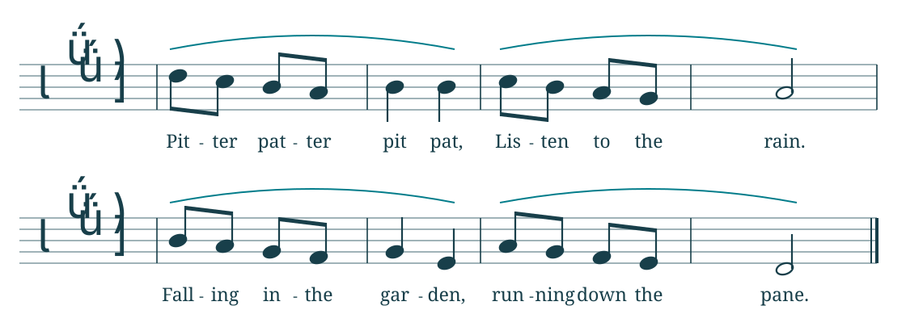
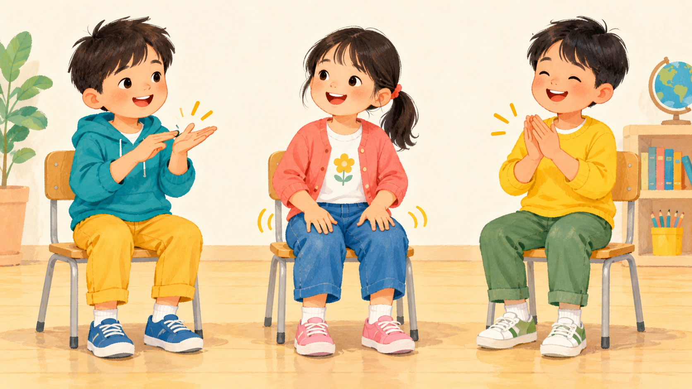
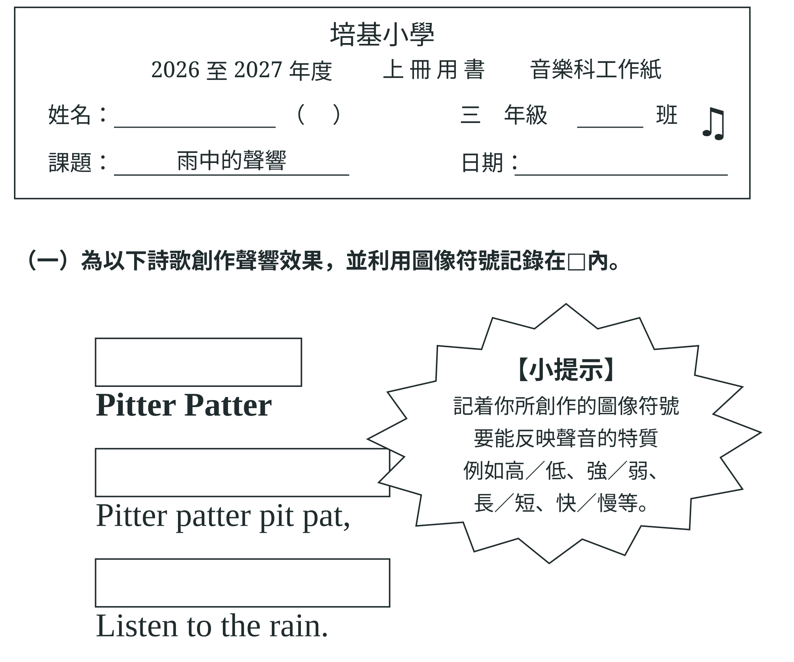

小三 3D 單元二 音樂的魅力
動人的配樂
第二課
《Pitter Patter》

旋律像雨點落下；
除了唱，我們還可以用
身體的聲音表現雨。
你想表現怎樣的雨？
🤏手指輕拍掌心
🦵輕拍膝蓋
🙌手掌互相摩擦
🗣口發「滴答」聲

• • • • ＝ 兩根手指輕拍掌心（輕而短）
符號要讓別人看得出怎樣演奏，不用畫得漂亮。
合適的聲音可以重複使用。
《雨中的聲響》上半頁

《雨中的聲響》下半頁
同一種拍擊，聽起來有甚麼不同？
力度
●輕
●強
速度
慢
快
疏／密速度
拍得密 ≠ 速度快
哪一次較像細雨？哪一次較像大雨？
收拾及直笛準備
📄 工作紙收好
取出直笛，放在桌上
未有指示不吹奏
✋ 老師舉手 → 立即停吹
直笛放在下巴下的「休息位置」
直笛：B、A、G 音
BAG
看老師示範，再一起吹 🎶
〈Mary Had a Little Lamb〉
🐑
用 B、A、G 吹這首歌
先聽一聽，再跟老師吹
節奏遊戲
開啟節奏遊戲 ↗👏
拍腿保持穩定拍子，
跟老師拍出節奏！
今天我們怎樣令聲音
更像細雨或大雨？
今天我們用自己發出的聲音表現雨景；
下一課會聆聽不同音樂，
再為圖片選配合適的音樂。
頁面目錄
← → 翻頁 F 全螢幕 工作紙頁 C 校正／D 整頁繪畫
格子繪畫